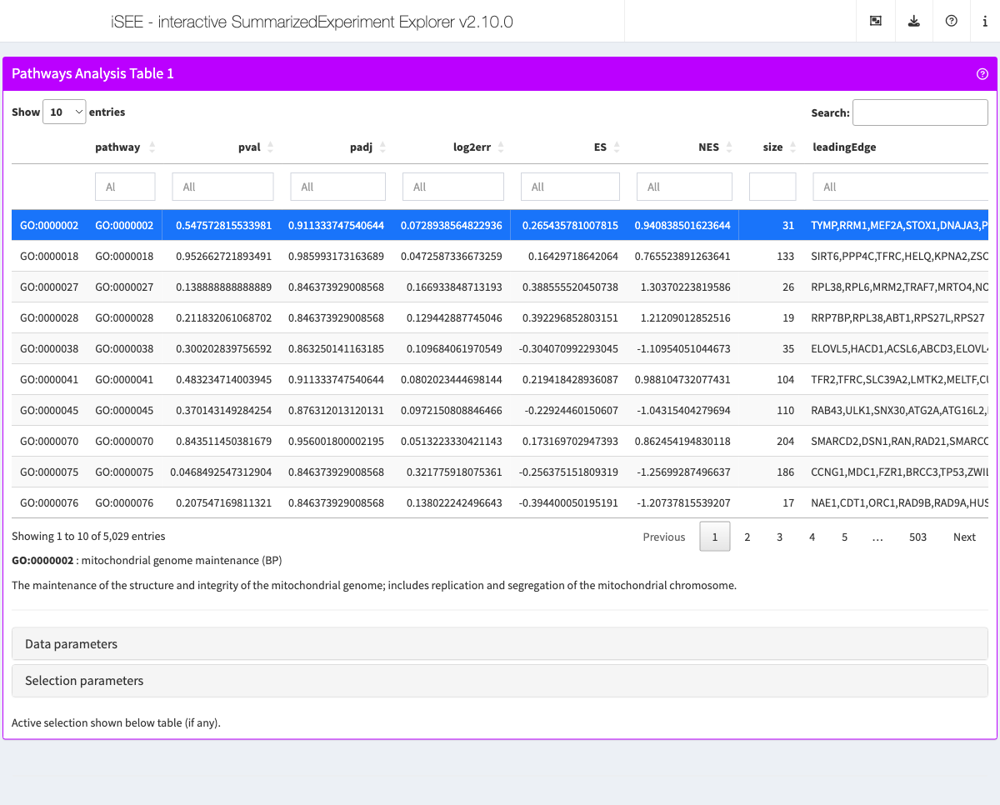

Working with the Gene Ontology
Kevin Rue-Albrecht
University of Oxfordkevin.rue-albrecht@imm.ox.ac.uk
22 October 2026
Source:vignettes/gene-ontology.Rmd
gene-ontology.RmdScenario
In this vignette, we demonstrate how one may use the package GO.db to dynamically display additional information about selected pathways in the interactive user interface.
Demonstration
Example data
First, we generate pathway analysis results for simulated data using fgsea.
In particular, we use the package org.Hs.eg.db to fetch real gene sets. To reduce memory footprint, we retain only the gene sets associated with 15 to 500 genes.
Then, we simulate a score for each of the gene present in any of those remaining gene sets. In practice, that score could be the log2 fold-change of the gene in a differential expression analysis (among other possibilities).
Finally, we perform an FGSEA on the simulated data.
library("org.Hs.eg.db")
library("fgsea")
# Example data ----
## Pathways
pathways <- select(org.Hs.eg.db, keys(org.Hs.eg.db, "SYMBOL"), c("GOALL"), keytype = "SYMBOL")
pathways <- subset(pathways, ONTOLOGYALL == "BP")
pathways <- unique(pathways[, c("SYMBOL", "GOALL")])
pathways <- split(pathways$SYMBOL, pathways$GOALL)
len_pathways <- lengths(pathways)
pathways <- pathways[len_pathways > 15 & len_pathways < 500]
## Features
set.seed(1)
# simulate a score for all genes found across all pathways
feature_stats <- rnorm(length(unique(unlist(pathways))))
names(feature_stats) <- unique(unlist(pathways))
# arbitrarily select a pathway to simulate enrichment
pathway_id <- "GO:0046324"
pathway_genes <- pathways[[pathway_id]]
# increase score of genes in the selected pathway to simulate enrichment
feature_stats[pathway_genes] <- feature_stats[pathway_genes] + 1
# fgsea ----
set.seed(42)
fgseaRes <- fgsea(pathways = pathways,
stats = feature_stats,
minSize = 15,
maxSize = 500)
head(fgseaRes[order(pval), ])
#> pathway pval padj log2err ES NES size
#> <char> <num> <num> <num> <num> <num> <int>
#> 1: GO:0046324 1.708589e-08 7.734784e-05 0.7337620 0.6229286 2.469155 50
#> 2: GO:0010827 3.663626e-08 8.292617e-05 0.7195128 0.5573615 2.354422 65
#> 3: GO:0046326 6.821721e-07 1.009323e-03 0.6594444 0.6680772 2.377560 31
#> 4: GO:0010828 8.918254e-07 1.009323e-03 0.6594444 0.6283217 2.357508 39
#> 5: GO:0098704 6.834062e-06 4.419685e-03 0.6105269 0.4911191 2.124972 72
#> 6: GO:0098708 6.834062e-06 4.419685e-03 0.6105269 0.4911191 2.124972 72
#> leadingEdge
#> <list>
#> 1: IRS1,LEP,PTH,CERS1,CAPN10,ITLN1,...[34]
#> 2: IRS1,LEP,PTH,CERS1,CAPN10,ITLN1,...[37]
#> 3: IRS1,PTH,CAPN10,ITLN1,PRKCI,FGF21,...[23]
#> 4: IRS1,PTH,CAPN10,ITLN1,PRKCI,FGF21,...[24]
#> 5: IRS1,LEP,PTH,CERS1,CAPN10,ITLN1,...[39]
#> 6: IRS1,LEP,PTH,CERS1,CAPN10,ITLN1,...[39]Then, we embed the fgsea results in a SummarizedExperiment object.
In this case, we create an empty
?SummarizedExperiment-class object, without any simulated
count data nor metadata, as we will not be using any of those data in
this example.
We then embed the pathway analysis results in the newly created
?SummarizedExperiment-class object.
But first, we reorder the results by increasing p-value. Although not essential, this implicitly defines the default ordering of the table in the live app.
library("SummarizedExperiment")
library("iSEEpathways")
se <- SummarizedExperiment()
fgseaRes <- fgseaRes[order(pval), ]
se <- embedPathwaysResults(fgseaRes, se, name = "fgsea", class = "fgsea", pathwayType = "GO")Pathway information
In this example, we configure the app option
PathwaysTable.select.details to define a function that,
given the identifier of the GO term currently selected in a panel,
displays information about that GO term.
Although not essential, this is a user-friendly and immediate way to ‘translate’ machine-friendly database identifiers into human-friendly descriptions.
library("iSEE")
library("GO.db")
library("shiny")
go_details <- function(x) {
info <- select(GO.db, x, c("TERM", "ONTOLOGY", "DEFINITION"), "GOID")
html <- list(p(strong(info$GOID), ":", info$TERM, paste0("(", info$ONTOLOGY, ")")))
if (!is.na(info$DEFINITION)) {
html <- append(html, list(p(info$DEFINITION)))
}
tagList(html)
}
se <- registerAppOptions(se, PathwaysTable.select.details = go_details)Live app
Finally, we configure the app initial state and launch the live app.
app <- iSEE(se, initial = list(
PathwaysTable(ResultName="fgsea", Selected = "GO:0046324", PanelWidth = 12L)
))
if (interactive()) {
shiny::runApp(app)
}
Reproducibility
The iSEEpathways package (Rue-Albrecht and Soneson, 2024) was made possible thanks to:
- R (R Core Team, 2026)
- BiocStyle (Oleś, 2026)
- knitr (Xie, 2026)
- RefManageR (McLean, 2017)
- rmarkdown (Allaire, Xie, Dervieux, McPherson, Luraschi, Ushey, Atkins, Wickham, Cheng, Chang, and Iannone, 2026)
- sessioninfo (Wickham, Chang, Flight, Müller, and Hester, 2026)
- testthat (Wickham, 2011)
This package was developed using biocthis.
Code for creating the vignette
## Create the vignette
library("rmarkdown")
system.time(render("gene-ontology.Rmd", "BiocStyle::html_document"))
## Extract the R code
library("knitr")
knit("gene-ontology.Rmd", tangle = TRUE)Date the vignette was generated.
#> [1] "2026-10-22 14:13:33 UTC"Wallclock time spent generating the vignette.
#> Time difference of 37.396 secsR session information.
#> ─ Session info ───────────────────────────────────────────────────────────────────────────────────────────────────────
#> setting value
#> version R version 4.6.1 (2026-06-24)
#> os Ubuntu 24.04.5 LTS
#> system x86_64, linux-gnu
#> ui X11
#> language en
#> collate en_US.UTF-8
#> ctype en_US.UTF-8
#> tz UTC
#> date 2026-10-22
#> pandoc 3.12.1 @ /usr/bin/ (via rmarkdown)
#> quarto 1.10.18 @ /usr/local/bin/quarto
#>
#> ─ Packages ───────────────────────────────────────────────────────────────────────────────────────────────────────────
#> package * version date (UTC) lib source
#> abind 1.4-8 2024-09-12 [1] RSPM (R 4.6.0)
#> AnnotationDbi * 1.75.2 2026-07-21 [1] Bioconductor 3.24 (R 4.6.1)
#> bibtex 0.5.3 2026-09-22 [1] RSPM (R 4.6.0)
#> Biobase * 2.73.2 2026-07-29 [1] Bioconductor 3.24 (R 4.6.1)
#> BiocBaseUtils 1.15.1 2026-05-10 [1] Bioconductor 3.24 (R 4.6.1)
#> BiocGenerics * 0.59.12 2026-08-11 [1] Bioconductor 3.24 (R 4.6.1)
#> BiocManager 1.30.27 2025-11-14 [2] CRAN (R 4.6.1)
#> BiocParallel 1.47.0 2026-04-28 [1] Bioconductor 3.24 (R 4.6.1)
#> BiocStyle * 2.41.0 2026-04-28 [1] Bioconductor 3.24 (R 4.6.1)
#> Biostrings 2.81.9 2026-09-06 [1] Bioconductor 3.24 (R 4.6.1)
#> bit 4.6.0 2025-03-06 [1] RSPM (R 4.6.0)
#> bit64 4.8.6 2026-09-01 [1] RSPM (R 4.6.0)
#> blob 1.3.0 2026-01-14 [1] RSPM (R 4.6.0)
#> bookdown 0.48 2026-08-28 [1] RSPM (R 4.6.0)
#> bslib 0.12.0 2026-08-04 [2] RSPM (R 4.6.0)
#> cachem 1.1.0 2024-05-16 [2] RSPM (R 4.6.0)
#> circlize 0.4.18 2026-04-04 [1] RSPM (R 4.6.0)
#> cli 3.6.6 2026-04-09 [2] RSPM (R 4.6.0)
#> clue 0.3-68 2026-03-26 [1] RSPM (R 4.6.0)
#> cluster 2.1.8.3 2026-07-30 [2] RSPM (R 4.6.0)
#> codetools 0.2-20 2024-03-31 [3] CRAN (R 4.6.1)
#> colorspace 2.1-4 2026-10-08 [1] RSPM (R 4.6.0)
#> colourpicker 1.3.0 2023-08-21 [1] RSPM (R 4.6.0)
#> ComplexHeatmap 2.29.0 2026-04-28 [1] Bioconductor 3.24 (R 4.6.1)
#> cowplot 1.2.0 2025-07-07 [1] RSPM (R 4.6.0)
#> crayon 1.5.3 2024-06-20 [2] RSPM (R 4.6.0)
#> data.table 1.18.6.1 2026-08-24 [1] RSPM (R 4.6.0)
#> DBI 1.3.0 2026-02-25 [1] RSPM (R 4.6.0)
#> DelayedArray 0.39.8 2026-09-30 [1] Bioconductor 3.24 (R 4.6.1)
#> desc 1.4.3 2023-12-10 [2] RSPM (R 4.6.0)
#> digest 0.6.39 2025-11-19 [2] RSPM (R 4.6.0)
#> doParallel 1.0.17 2022-02-07 [1] RSPM (R 4.6.0)
#> dplyr 1.2.1 2026-04-03 [1] RSPM (R 4.6.0)
#> DT 0.34.0 2025-09-02 [1] RSPM (R 4.6.0)
#> evaluate 1.0.5 2025-08-27 [2] RSPM (R 4.6.0)
#> farver 2.1.2 2024-05-13 [1] RSPM (R 4.6.0)
#> fastmap 1.2.0 2024-05-15 [2] RSPM (R 4.6.0)
#> fastmatch 1.1-8 2026-01-17 [1] RSPM (R 4.6.0)
#> fgsea * 1.39.2 2026-06-26 [1] Bioconductor 3.24 (R 4.6.1)
#> fontawesome 0.5.3 2024-11-16 [2] RSPM (R 4.6.0)
#> foreach 1.5.2 2022-02-02 [1] RSPM (R 4.6.0)
#> fs 2.1.0 2026-04-18 [2] RSPM (R 4.6.0)
#> generics * 0.1.4 2025-05-09 [1] RSPM (R 4.6.0)
#> GenomicRanges * 1.65.4 2026-09-02 [1] Bioconductor 3.24 (R 4.6.1)
#> GetoptLong 1.1.1 2026-04-08 [1] RSPM (R 4.6.0)
#> ggplot2 4.0.3 2026-04-22 [1] RSPM (R 4.6.0)
#> ggrepel 0.9.8 2026-03-17 [1] RSPM (R 4.6.0)
#> GlobalOptions 0.1.4 2026-04-08 [1] RSPM (R 4.6.0)
#> glue 1.8.1 2026-04-17 [2] RSPM (R 4.6.0)
#> GO.db * 3.23.1 2026-07-20 [1] Bioconductor
#> gtable 0.3.6 2024-10-25 [1] RSPM (R 4.6.0)
#> htmltools 0.5.9 2025-12-04 [2] RSPM (R 4.6.0)
#> htmlwidgets 1.6.4 2023-12-06 [2] RSPM (R 4.6.0)
#> httpuv 1.6.17 2026-03-18 [2] RSPM (R 4.6.0)
#> httr 1.4.9 2026-09-01 [1] RSPM (R 4.6.0)
#> igraph 2.3.4 2026-09-30 [1] RSPM (R 4.6.0)
#> IRanges * 2.47.5 2026-08-27 [1] Bioconductor 3.24 (R 4.6.1)
#> iSEE * 2.25.1 2026-07-13 [1] Bioconductor 3.24 (R 4.6.1)
#> iSEEpathways * 1.11.0 2026-10-22 [1] Bioconductor
#> iterators 1.0.14 2022-02-05 [1] RSPM (R 4.6.0)
#> jquerylib 0.1.4 2021-04-26 [2] RSPM (R 4.6.0)
#> jsonlite 2.0.0 2025-03-27 [2] RSPM (R 4.6.0)
#> KEGGREST 1.53.6 2026-07-23 [1] Bioconductor 3.24 (R 4.6.1)
#> knitr 1.52 2026-09-06 [2] RSPM (R 4.6.0)
#> later 1.4.8 2026-03-05 [2] RSPM (R 4.6.0)
#> lattice 0.23-1 2026-08-12 [2] RSPM (R 4.6.0)
#> lifecycle 1.0.5 2026-01-08 [2] RSPM (R 4.6.0)
#> listviewer 4.0.0 2023-09-30 [1] RSPM (R 4.6.0)
#> lubridate 1.9.5 2026-02-04 [1] RSPM (R 4.6.0)
#> magrittr 2.0.5 2026-04-04 [2] RSPM (R 4.6.0)
#> Matrix 1.7-6 2026-07-25 [2] RSPM (R 4.6.0)
#> MatrixGenerics * 1.25.0 2026-04-28 [1] Bioconductor 3.24 (R 4.6.1)
#> matrixStats * 1.5.0 2025-01-07 [1] RSPM (R 4.6.0)
#> memoise 2.0.1 2021-11-26 [2] RSPM (R 4.6.0)
#> mgcv 1.9-4 2025-11-07 [3] CRAN (R 4.6.1)
#> mime 0.13 2025-03-17 [2] RSPM (R 4.6.0)
#> miniUI 0.1.2 2025-04-17 [2] RSPM (R 4.6.0)
#> nlme 3.1-171 2026-09-01 [2] RSPM (R 4.6.0)
#> org.Hs.eg.db * 3.23.1 2026-07-20 [1] Bioconductor
#> otel 0.2.0 2025-08-29 [2] RSPM (R 4.6.0)
#> pillar 1.11.1 2025-09-17 [2] RSPM (R 4.6.0)
#> pkgconfig 2.0.3 2019-09-22 [2] RSPM (R 4.6.0)
#> pkgdown 2.2.1 2026-07-07 [2] RSPM (R 4.6.0)
#> plyr 1.8.9 2023-10-02 [1] RSPM (R 4.6.0)
#> png 0.1-9 2026-03-15 [1] RSPM (R 4.6.0)
#> promises 1.5.0 2025-11-01 [2] RSPM (R 4.6.0)
#> R6 2.6.1 2025-02-15 [2] RSPM (R 4.6.0)
#> ragg 1.5.2 2026-03-23 [2] RSPM (R 4.6.0)
#> RColorBrewer 1.1-3 2022-04-03 [1] RSPM (R 4.6.0)
#> Rcpp 1.1.2 2026-07-05 [2] RSPM (R 4.6.0)
#> RefManageR * 1.4.0 2022-09-30 [1] RSPM (R 4.6.0)
#> rintrojs 0.3.4 2024-01-11 [1] RSPM (R 4.6.0)
#> rjson 0.2.23 2024-09-16 [1] RSPM (R 4.6.0)
#> rlang 1.3.0 2026-07-05 [2] RSPM (R 4.6.0)
#> rmarkdown 2.32 2026-09-01 [2] RSPM (R 4.6.0)
#> RSQLite 3.53.3 2026-06-30 [1] RSPM (R 4.6.0)
#> S4Arrays 1.13.2 2026-09-30 [1] Bioconductor 3.24 (R 4.6.1)
#> S4Vectors * 0.51.10 2026-09-16 [1] Bioconductor 3.24 (R 4.6.1)
#> S7 0.2.2 2026-04-22 [1] RSPM (R 4.6.0)
#> sass 0.4.10 2025-04-11 [2] RSPM (R 4.6.0)
#> scales 1.4.0 2025-04-24 [1] RSPM (R 4.6.0)
#> Seqinfo * 1.3.2 2026-08-27 [1] Bioconductor 3.24 (R 4.6.1)
#> sessioninfo * 1.2.4 2026-06-04 [2] RSPM (R 4.6.0)
#> shape 1.4.6.1 2024-02-23 [1] RSPM (R 4.6.0)
#> shiny * 1.14.0 2026-06-21 [2] RSPM (R 4.6.0)
#> shinyAce 0.4.4 2025-02-03 [1] RSPM (R 4.6.0)
#> shinydashboard 0.7.3 2025-04-21 [1] RSPM (R 4.6.0)
#> shinyjs 2.1.1 2026-01-15 [1] RSPM (R 4.6.0)
#> shinyWidgets 0.9.1 2026-03-09 [1] RSPM (R 4.6.0)
#> SingleCellExperiment * 1.35.2 2026-07-16 [1] Bioconductor 3.24 (R 4.6.1)
#> SparseArray 1.13.4 2026-09-30 [1] Bioconductor 3.24 (R 4.6.1)
#> stringi 1.8.9 2026-08-04 [2] RSPM (R 4.6.0)
#> stringr 1.6.0 2025-11-04 [1] RSPM (R 4.6.0)
#> SummarizedExperiment * 1.43.0 2026-04-28 [1] Bioconductor 3.24 (R 4.6.1)
#> systemfonts 1.3.2 2026-03-05 [2] RSPM (R 4.6.0)
#> textshaping 1.0.5 2026-03-06 [2] RSPM (R 4.6.0)
#> tibble 3.3.1 2026-01-11 [2] RSPM (R 4.6.0)
#> tidyselect 1.2.1 2024-03-11 [1] RSPM (R 4.6.0)
#> timechange 0.4.0 2026-01-29 [1] RSPM (R 4.6.0)
#> vctrs 0.7.3 2026-04-11 [2] RSPM (R 4.6.0)
#> vipor 0.4.7 2023-12-18 [1] RSPM (R 4.6.0)
#> viridisLite 0.4.3 2026-02-04 [1] RSPM (R 4.6.0)
#> xfun 0.62 2026-10-16 [2] RSPM (R 4.6.0)
#> xml2 1.6.0 2026-06-22 [2] RSPM (R 4.6.0)
#> xtable 1.8-8 2026-02-22 [2] RSPM (R 4.6.0)
#> XVector 0.53.0 2026-04-28 [1] Bioconductor 3.24 (R 4.6.1)
#> yaml 2.3.12 2025-12-10 [2] RSPM (R 4.6.0)
#>
#> [1] /__w/_temp/Library
#> [2] /usr/local/lib/R/site-library
#> [3] /usr/local/lib/R/library
#> * ── Packages attached to the search path.
#>
#> ──────────────────────────────────────────────────────────────────────────────────────────────────────────────────────Bibliography
This vignette was generated using BiocStyle (Oleś, 2026) with knitr (Xie, 2026) and rmarkdown (Allaire, Xie, Dervieux et al., 2026) running behind the scenes.
Citations made with RefManageR (McLean, 2017).
[1] J. Allaire, Y. Xie, C. Dervieux, et al. rmarkdown: Dynamic Documents for R. R package version 2.32. 2026. URL: https://github.com/rstudio/rmarkdown.
[2] M. W. McLean. “RefManageR: Import and Manage BibTeX and BibLaTeX References in R”. In: The Journal of Open Source Software (2017). DOI: 10.21105/joss.00338.
[3] A. Oleś. BiocStyle: Standard styles for vignettes and other Bioconductor documents. R package version 2.41.0. 2026. DOI: 10.18129/B9.bioc.BiocStyle. URL: https://bioconductor.org/packages/BiocStyle.
[4] R Core Team. R: A Language and Environment for Statistical Computing. R Foundation for Statistical Computing (ROR: <https://ror.org/05qewa988>;). Vienna, Austria, 2026. DOI: 10.32614/R.manuals. URL: https://www.R-project.org/.
[5] K. Rue-Albrecht and C. Soneson. iSEEpathways: iSEE extension for panels related to pathway analysis. R package version 1.11.0. 2024. URL: https://github.com/iSEE/iSEEpathways.
[6] H. Wickham. “testthat: Get Started with Testing”. In: The R Journal 3 (2011), pp. 5–10. URL: https://journal.r-project.org/articles/RJ-2011-002/.
[7] H. Wickham, W. Chang, R. Flight, et al. sessioninfo: R Session Information. R package version 1.2.4. 2026. URL: https://sessioninfo.r-lib.org.
[8] Y. Xie. knitr: A General-Purpose Package for Dynamic Report Generation in R. R package version 1.52. 2026. URL: https://yihui.org/knitr/.